首页余额聚合仍显示 --
同一次 iOS 会话中，转账页能够读取真实 AVAX、USDC 等余额并完成发送，
但首页资产列表仍为 --。问题位于首页 MarketController
聚合刷新/状态映射，不在地址派生、RPC 基础余额或签名发送链路。
KT Wallet 在 iPhone 17 Pro / iOS 26.2 Simulator 上完成当前 8 条链的真实地址派生、 Wallet Core 签名、Face ID 授权、测试网广播、链上确认、余额与交易记录 UI 验收。
转账与签名主链路已通过。原报告的 16 笔链上证据之外，本轮又重新广播并确认 Polygon Amoy POL、Polygon Amoy Circle USDC、BNB Testnet tBNB 与 BUSD。 BNB Smart Chain 不在 Circle 官方 USDC 发行网络中，本轮改用 BSC Testnet 的 Binance USD 测试部署；余额不足时先以 0.001 tBNB 在测试网兑换， 再由 KT Wallet 真实签名并发送 1 BUSD。 本轮机器可读证据见 evidence-2026-07-29-rerun.json。
| 网络 | 原生币 | 稳定币 | 交易记录 | 链上链接 |
|---|---|---|---|---|
| Ethereum Sepolia | ETH 已确认 | Test USDT 已确认 | Gateway 已命中 | ETH · 0xcfa835…2306e USDT · 0x20a86a…8827c |
| Polygon Amoy | POL 已确认 | USDC 已确认 | Gateway 已命中 | POL · 0xa8095d…f1b7a USDC · 0x1ade19…11bd9 |
| Base Sepolia | ETH 已确认 | USDC 已确认 | Gateway 已命中 | ETH · 0x5d7a29…6dc7 USDC · 0x7c39b5…18aa |
| Arbitrum Sepolia | ETH 已确认 | USDC 已确认 | Gateway 已命中 | ETH · 0xeb8d2d…8d98 USDC · 0xe8c980…ca64 |
| Avalanche Fuji | AVAX 已确认 | USDC 已确认 | Gateway 已命中 | AVAX · 0x8fc5f3…3c62 USDC · 0xf0cf03…4896 |
| BNB Smart Chain Testnet | BNB 已确认 | BUSD 已确认 | 明确 unsupported | tBNB · 0xb6bbed…56be3 BUSD · 0xb021e7…faeb6 |
| TRON Nile | TRX 已确认 | Test USDT 已确认 | Gateway 已命中 | TRX · 6ce253…4087 USDT · 80f70a…ceb6 |
| Solana Devnet | SOL 已确认 | Circle USDC 已确认 | Gateway 已命中 | SOL · 4YT4m5…xie4N USDC · 4kEzkJ…y8NA |
--
同一次 iOS 会话中，转账页能够读取真实 AVAX、USDC 等余额并完成发送，
但首页资产列表仍为 --。问题位于首页 MarketController
聚合刷新/状态映射，不在地址派生、RPC 基础余额或签名发送链路。
已移除失效的 rpc-amoy.polygon.technology，改为两个独立
RPC 并启用 failover。Gateway 1.7.1 公网实测可读取真实 POL、USDC、
nonce 与动态费用；Etherscan V2 索引已配置，真实查询返回 11 条
POL/USDC 记录，本轮两笔 txHash 均已命中。
Routescan 已停止索引 BNB 56/97，Gateway 1.7.1 已移除该失效源。
现在返回 unsupported，不会再把上游下线误报为“钱包无记录”。
完整历史仍需配置支持 BNB 的可信索引服务；App 自己广播的交易继续由本地
Pending/Confirmed 记录合并展示。
首轮测试因系统签名授权未响应而超时，随后通过 Simulator 的 Matching Face 完成每一次签名授权并全部通过。这证明测试确实走了原生认证， 但持续自动化应增加可复用的 Face ID 驱动步骤。
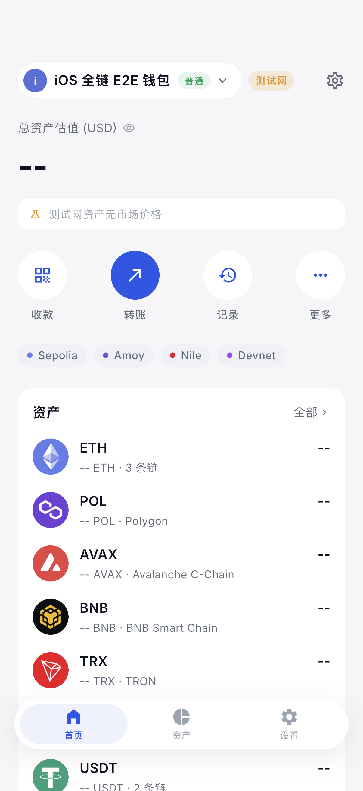
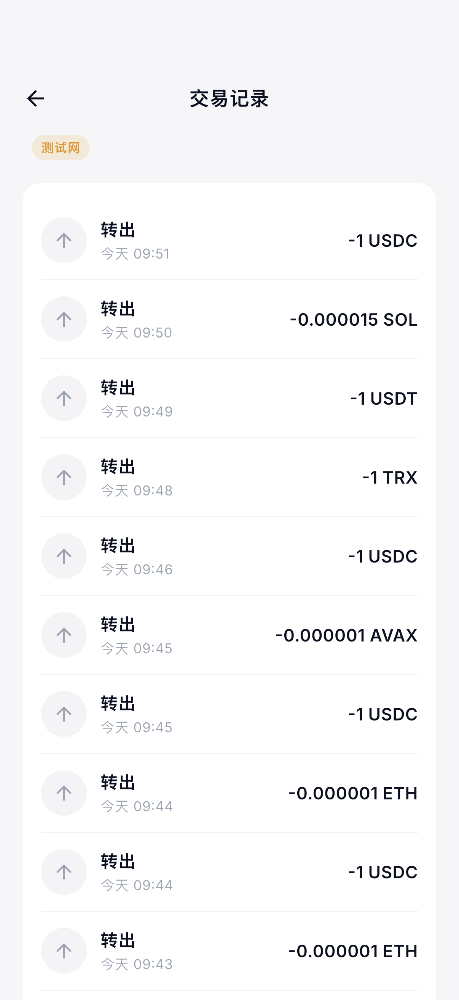
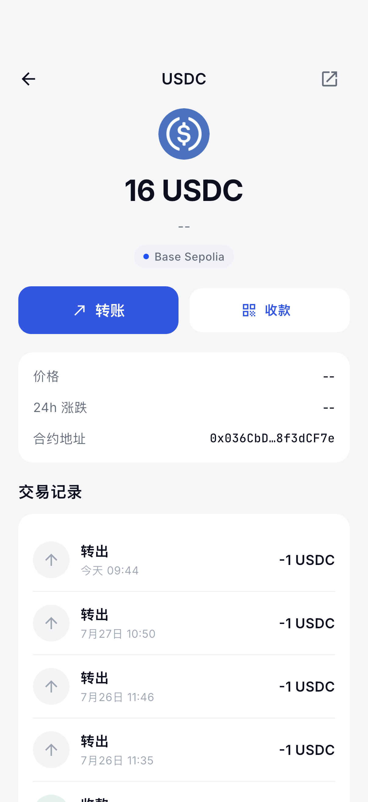
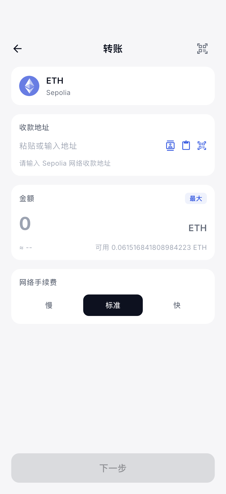
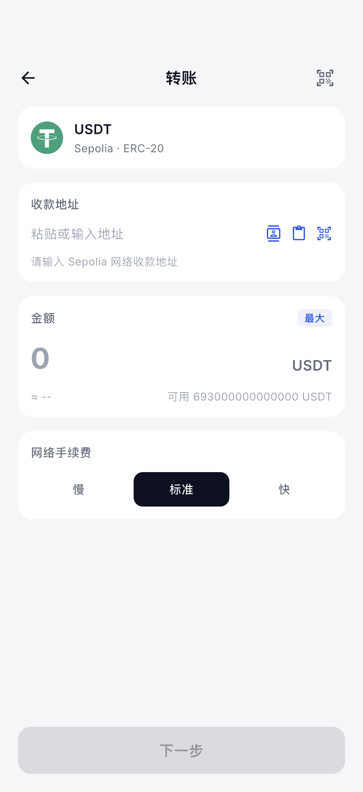
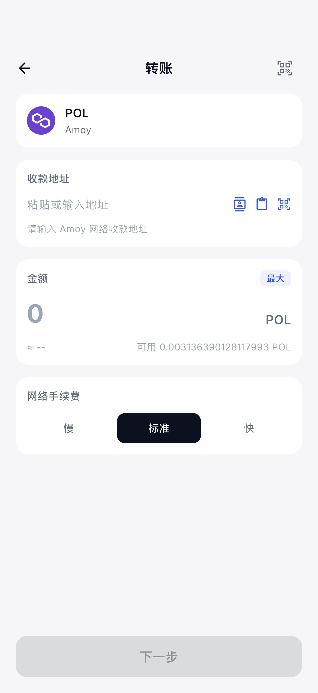
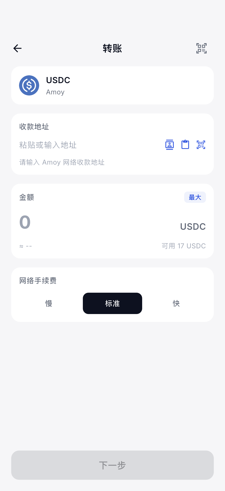
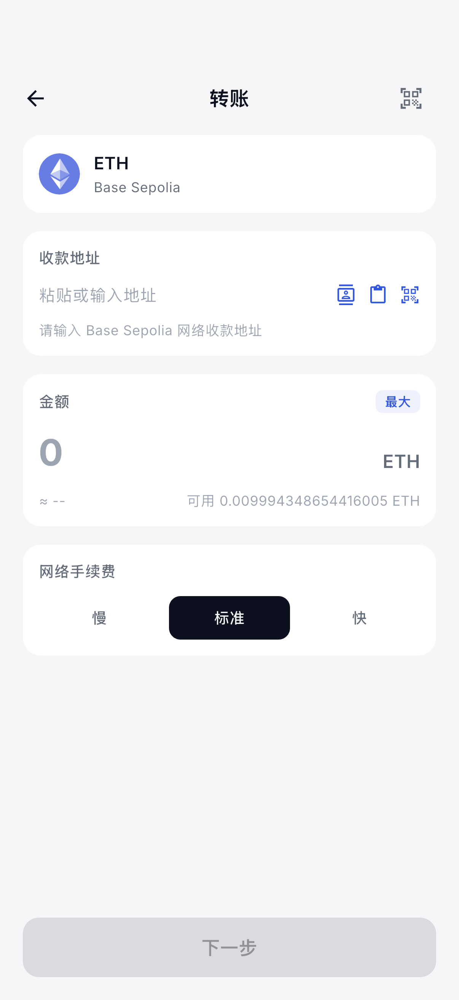
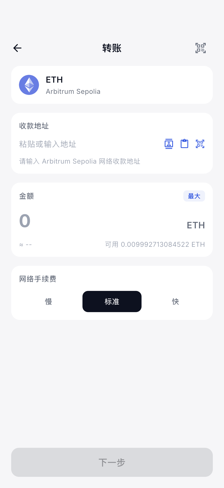
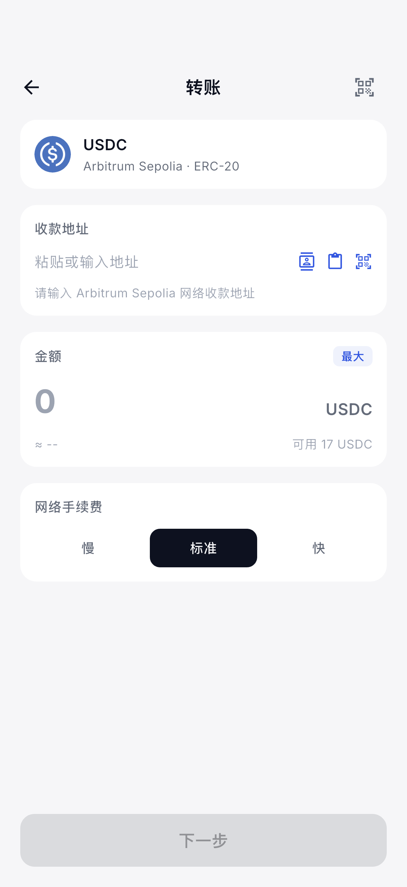
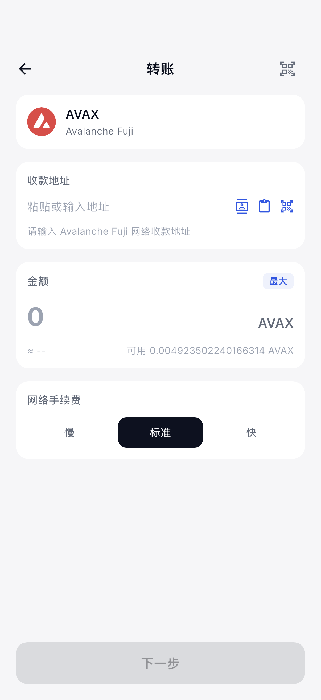
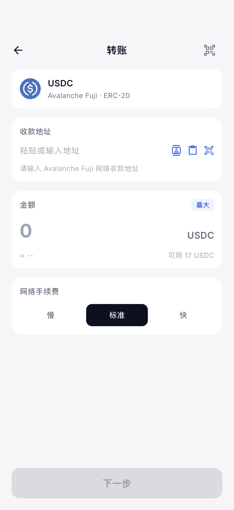
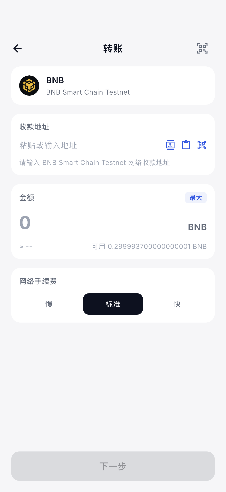
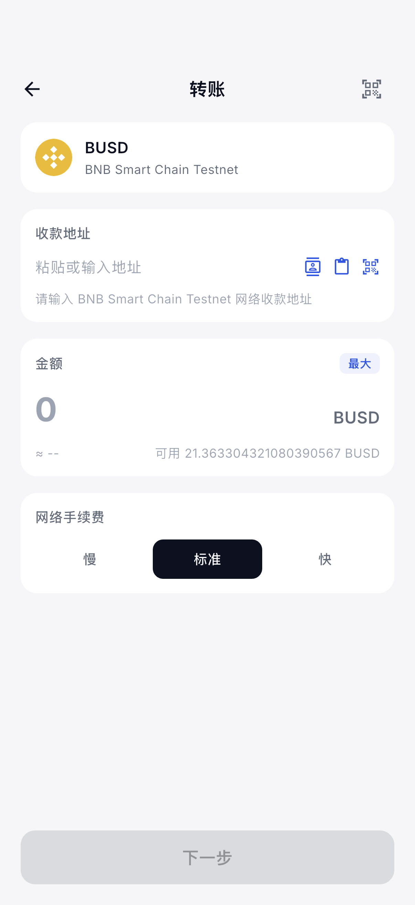
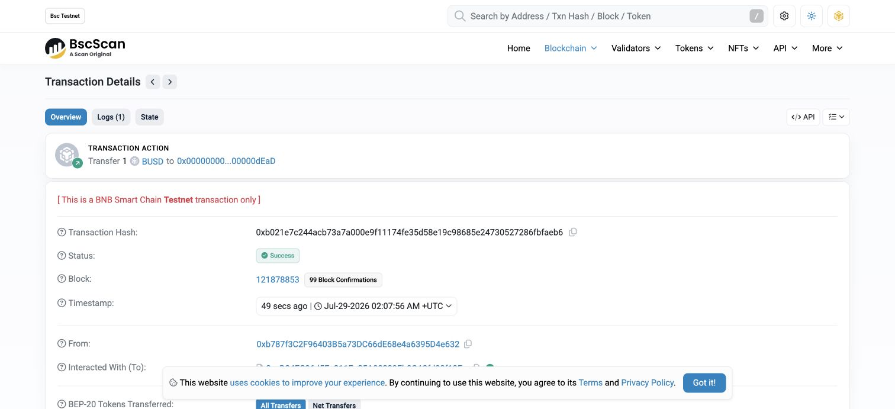
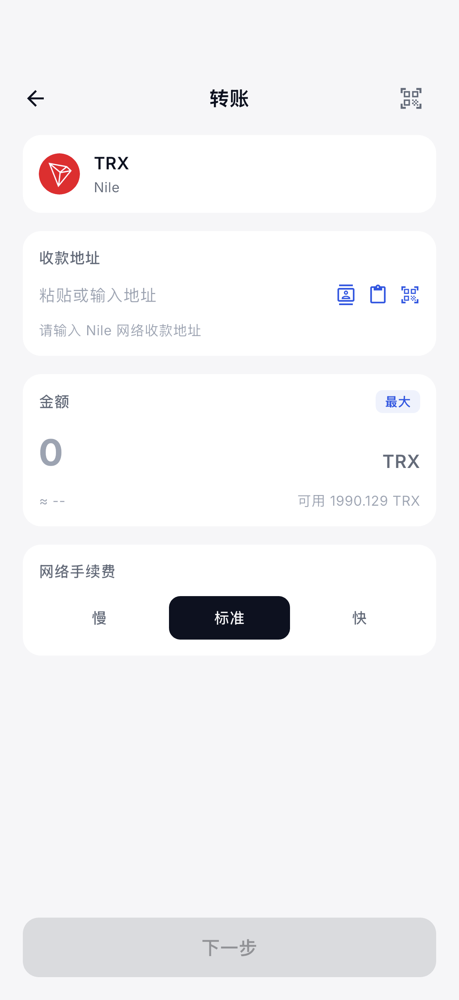
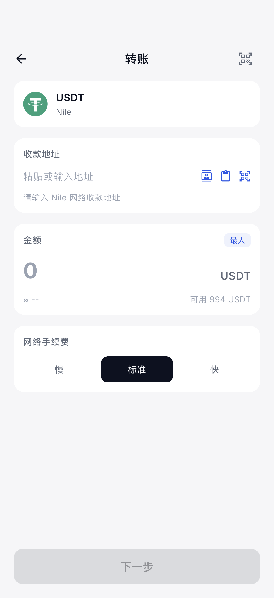
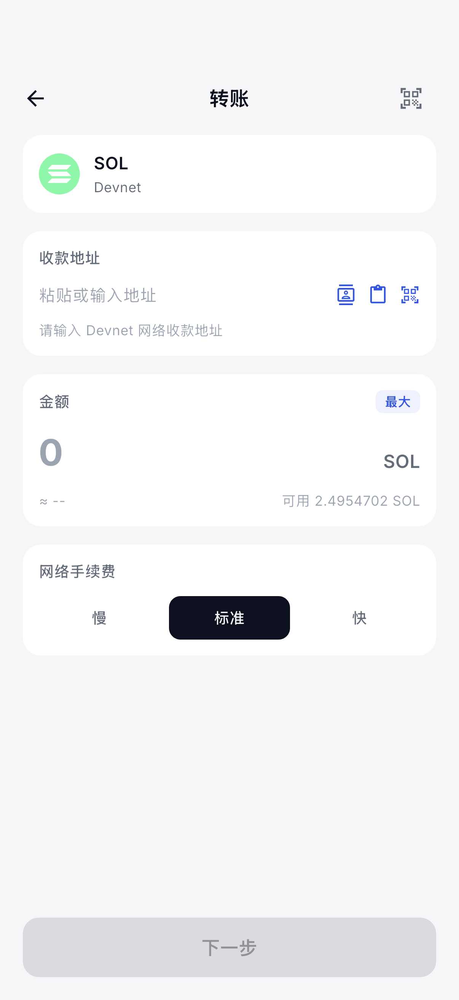
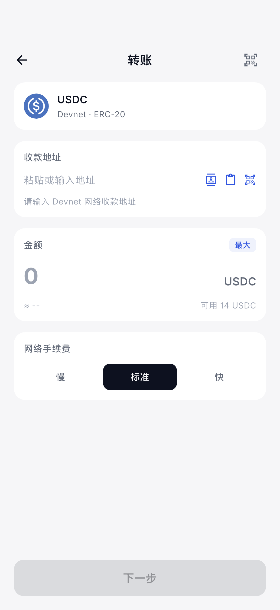
MethodChannelCoreCrypto 保存钱包、派生地址和签名；未启用 KT_ALLOW_MOCK_CRYPTO。https://gateway.kt-wallet.com/rpc 再次查询，并验证本轮 txHash 是否出现。